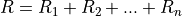

eidedocs
Contents:
1. Electrical
1.1. Basic Electrical
1.1.1. Ohm’s law
1.1.2. Resistors in series
eidedocs
1.
Electrical
1.1.
Basic Electrical
View page source
1.1.
Basic Electrical
1.1.1.
Ohm’s law
1.1.2.
Resistors in series
